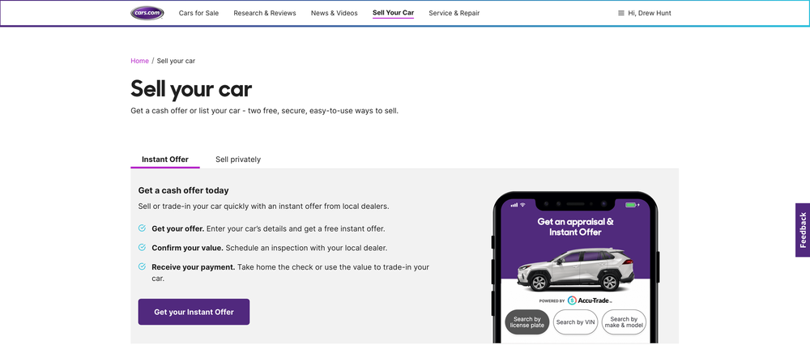
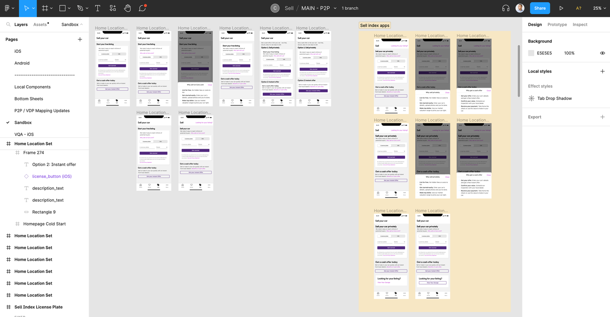
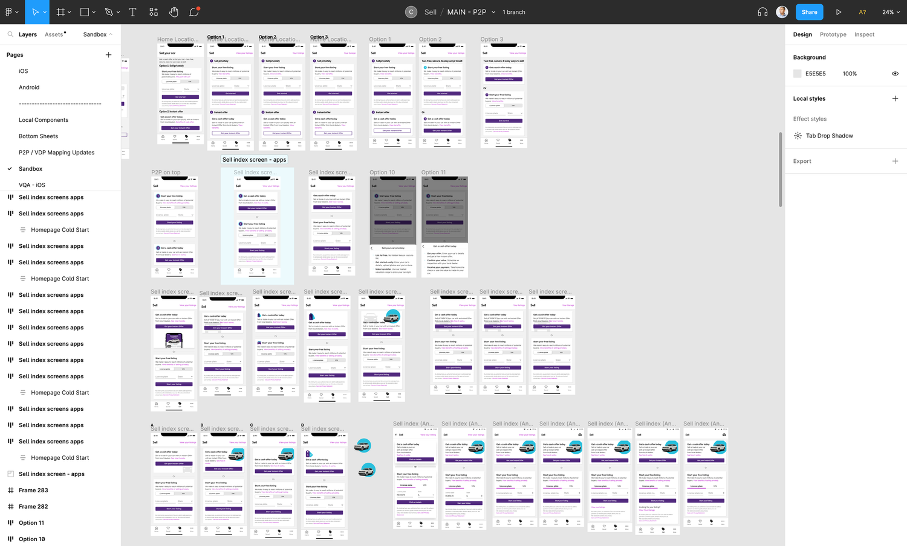
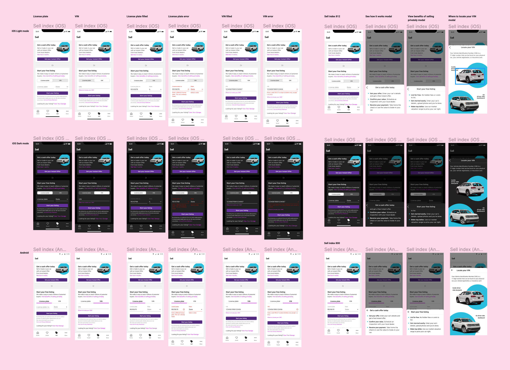
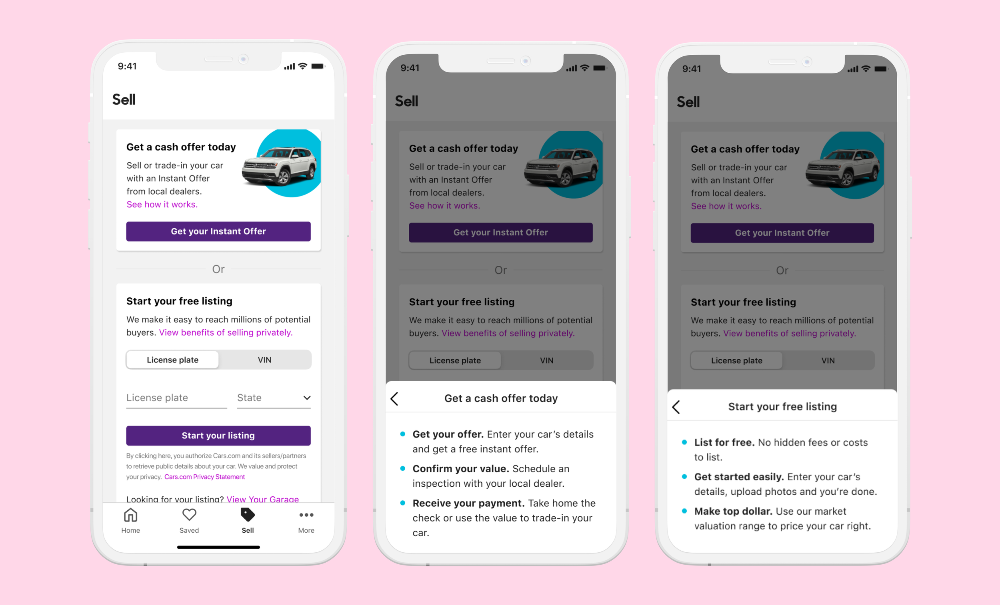
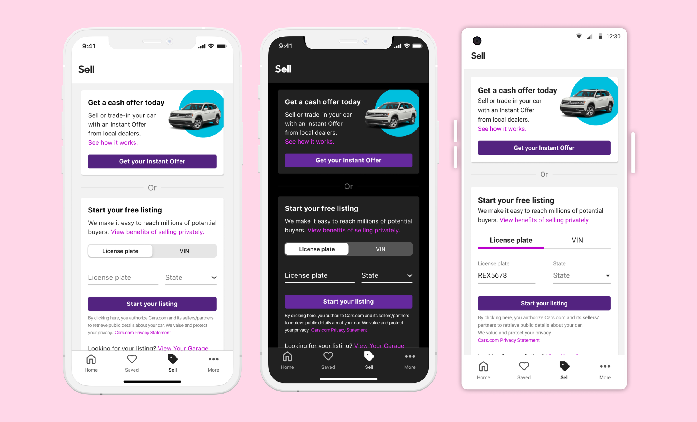

Cars.com · Product Designer · November – December 2022
Redesigning the Sell index page for mobile apps.
The company wanted to push the instant offer feature wherein sellers can get a cash offer from dealers. The sell index page needed to be updated to include the instant offer.

Problem
The company wanted to push the instant offer feature wherein sellers can get a cash offer from dealers. The sell index page needed to be updated to include the instant offer.
Solution
Redesign the sell index page for mobile apps (iOS and Android) to introduce the Instant Offer feature as an option for car sellers in selling their car.
Summary of what I did
Discovery + Research
- User interviews
- Stakeholder interviews
Design
- High fidelity mocks
Collaboration
Collaborated with:
- Stakeholders
- Product Manager
- Lead developer and team developers
QA
- Provided QA and visual QA
My Role
Once the responsive web version of Cars.com Sell privately product officially launched, I joined the mobile apps team to lead the design efforts. I was tasked to create a sell index page to include both our sell products — Instant Offer and Sell Privately.
Sell Index Page Objectives
The main objectives of this project were:
- Make it clear that sellers have two options to sell their used car. The two options were: Getting a cash offer from dealers and listing the car as an Ad in our marketplace.
- Tell the sellers the benefits of each option.
- The design has to be consistent with style guides and both iOS and Android versions must be provided. At Cars.com, designers need to provide iOS mocks for both light and dark mode.
Web Version
The Instant Offer team redesigned the web version of the sell index page and I used that as a starting point.

Discovery & Research
After doing some competitive analysis, I scheduled and facilitated 5 user interviews to get their feedback on the web design of the Sell index. The main theme of the user interviews was that Sell privately took a secondary seat behind the Instant Offer product. Some users took a while to locate the call to action to start the process of listing their cars on our site. I had to find a way to show both calls to action in front of users.
We wanted to release the app version of the Sell privately feature as soon as possible. The sell index redesign was a high priority so I decided not to create low-fidelity mocks and went straight to high-fidelity. I still experimented on many iterations of the design before we had a shippable design candidate. I started with iOS light mode version first.
Design Iterations


Final Designs
The following screens were handed off to engineering to be built. I delivered both iOS (light and dark mode) and Android versions. Also included in the deliverables are the filled and error states of the input fields, and the modals that showed when text links were selected.
Based on the feedback I got from users, I decided not to do the tab approach that was used in the web version. I showed the two main calls to action up front and above the fold as much as possible. To do that, I chose to only show the benefits once their respective text links were selected by the user.


iOS and Android
